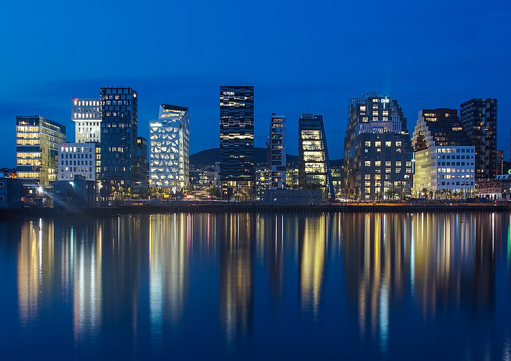

Oslo, a capital da Noruega, fica no litoral sul do país, na cabeceira do fiorde de Oslo. A cidade é conhecida por suas áreas verdes e seus museus. Muitos deles ficam na Península Bygdøy, como o Museu Marítimo Norueguês, nas margens da península, e o Museu do Navio Viking, com exemplares do século IX. A Holmenkollbakken é uma colina para a prática de saltos de esqui com vista panorâmica do fiorde e um museu de esqui.
clique aqui para baiar uma apresentação de powerpoint sobre a cidade
clique aqui para baixar um arquivo zip com nada dentro